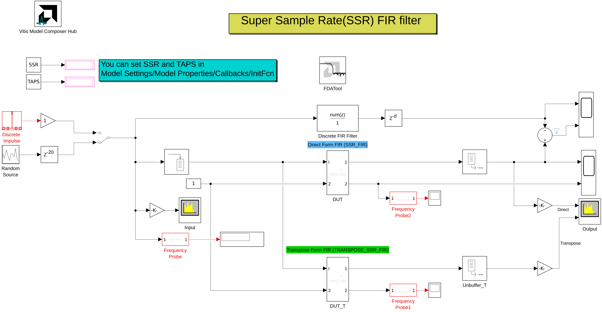

This reference design can be used as a starting design point when efficient implementations of very high data rate (over 1 Gsps) Single Rate FIRs are required. This PL based design can be used in any modern AMD device - 7-Series/UltraScale/UltraScale+/Versal.

The model now contains two functionally-equivalent FIR architectures side by side, both driven by the same stimulus. The Direct form is checked sample-by-sample against a golden floating-point reference, and the Direct and Transpose outputs are overlaid in the Output spectrum analyzer to confirm the two architectures produce equivalent results (matching to within one LSB):
DUT – Direct Form (SSR_FIR.vhd): partial products cascade from the first to the last tap through the DSP PCOUT chain. The cascade is TAPS deep.DUT_T – Transpose Form (TRANSPOSE_SSR_FIR.vhd): the input is broadcast to all DSPs and partial sums accumulate stage-by-stage through the DSP PREG/PCOUT registers. For SSR>1 each of the SSR lanes implements a transposed sub-FIR, so the cascade is only TAPS/SSR deep per lane.The two architectures are functionally equivalent, with outputs agreeing to within one output LSB (2^-16). Each form is independently verified against the golden floating-point reference. The two forms have different pipeline latencies (direct = TAPS+2 clocks, transpose = 3×SSR+2 clocks), so the transpose output leads the direct output in time.
To generate code for one architecture, point the Vitis Model Composer Hub block's subsystem selection at DUT (direct) or DUT_T (transpose).
The critical path of the direct form grows with TAPS (the PCOUT cascade), while the transpose form's critical path is one DSP multiply-accumulate that is independent of TAPS. This lets the transpose form close timing at high SSR and large TAPS where the direct form's cascade does not.
| Property | Direct Form | Transpose Form |
|---|---|---|
| SSR range | 1, 2, 4, 8, 16 (2^n) | 1, 2, 4, 8, 16 (2^n) |
| Fmax, Versal (SSR≤4) | ~822 MHz (device ceiling) | ~834–841 MHz |
| Fmax, SSR=8 | ~670–740 MHz | ~834 MHz |
| Latency (SSR>1, NS) | TAPS + 2 | 3×SSR + 2 |
| PCOUT/PREG chain depth | TAPS hops | TAPS/SSR hops per lane |
| DSP count, NS | SSR × TAPS | SSR × TAPS |
Rule of thumb: use the direct form for SSR 2–4 with TAPS ≤ 64 (shorter latency, simplest dataflow); use the transpose form for SSR ≥ 8, or for TAPS > 64 at SSR = 4, or whenever a TAPS-independent (short, fixed) latency is required.
The model is parameterized through Model Settings → Model Properties → Callbacks → InitFcn:
SSR = 8; % clocks per sample — MUST be a power of two (1,2,4,8,16,...)
TAPS = 64; % number of FIR coefficients
Ts = 1/SSR; % input sample time; SSR*Ts must equal the Simulink system period (1)
FCOEFF = fir1(TAPS-1,0.25); % shared coefficient set (hardware + golden reference)
Notes:
SSR must be a power of two. Both cores assert this; non-power-of-2 SSR is not supported by the SSR>1 accumulation chain.Ts = 1/SSR keeps the buffered input frame rate aligned with the Vitis Model Composer Hub's Simulink system period so the golden-vs-DUT comparison lines up. Changing SSR automatically rescales Ts.SSRFIR Model Composer block mask inside each DUT.Copyright (c) 2026 Advanced Micro Devices, Inc.